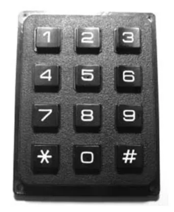
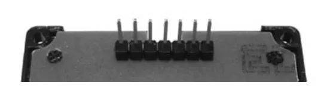
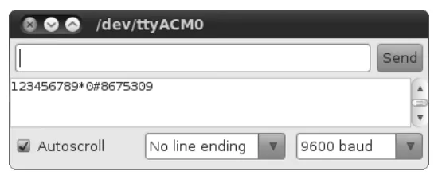

As your projects become more involved, you might want to accept numeric input from users when your Arduino isn’t connected to a PC—for example, if you’d like to have the ability to turn something on or off by entering a secret number. One option would be to wire up 10 or more push buttons to various digital input pins (for the numbers 0 through 9); but it’s much easier to use a numeric keypad like the one shown in Figure 9-1.

One of the benefits of using a keypad is that it uses only 7 pins for 12 active buttons, and with the use of a clever Arduino library, you won’t need to add pull-down resistors for debouncing as we did in Chapter 4. You can download and then install the Keypad library from http://arduino.cc/ playground/uploads/Code/Keypad.zip.
Wiring a Keypad
Physically wiring the keypad to the Arduino is easy. On the back of the key-pad are seven pins, as shown in Figure 9-2.

The pins are numbered 1 to 7, from left to right. For all of the keypad projects in this book, you’ll make the connections shown in Table 9-1.
| Keypad Pin Number | Arduino Pin |
|---|---|
| 1 | Digital 5 |
| 2 | Digital 4 |
| 3 | Digital 3 |
| 4 | Digital 2 |
| 5 | Digital 8 |
| 6 | Digital 7 |
| 7 | Digital 6 |
Programming for the Keypad
When you write a sketch for the keypad, you must include certain lines of code to enable the keypad, as identified in the following example sketch. The required code starts at ❶ and ends at ❺.
Before moving forward, test the keypad by entering and uploading Listing 9-1:
// Listing 9-1
❶ // Beginning of necessary code
#include "Keypad.h"
const byte ROWS = 4; // set display to four rows
const byte COLS = 3; // set display to three columns
char keys[ROWS][COLS] =
{{'1','2','3'},
{'4','5','6'},
{'7','8','9'},
❷ {'*','0','#'}};
❸ byte rowPins[ROWS] = {5, 4, 3, 2};
❹ byte colPins[COLS] = {8, 7, 6};
Keypad keypad = Keypad( makeKeymap(keys), rowPins, colPins, ROWS, COLS );
❺ // End of necessary code
void setup()
{
Serial.begin(9600);
}
void loop()
{
char key = keypad.getKey();
if (key != NO_KEY)
{
Serial.print(key);
}
}At ❷, we introduce the char variable type that contains one character, such as a letter, number, or symbol, that can be generated with a computer keyboard. In this case, it contains the keypad’s numbers and symbols. The lines of code at ❸ and ❹ define which pins are used on the Arduino. Using these lines and Table 9-1, you can change the digital pins used for input if you want.
Testing the Sketch
After uploading the sketch, open the Serial Monitor and press some keys on the keypad. The characters for the keys you pressed will be displayed in the Serial Monitor, as shown in Figure 9-3.
